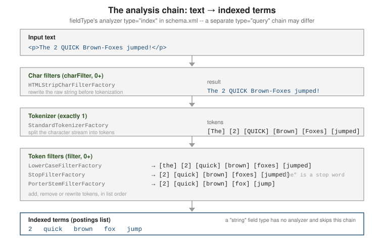

Text analysis: analyzers, tokenizers & token filters
|
This content was generated with the assistance of AI and should be verified against the official documentation before being relied on in production. |
Analysis is the process that turns the raw text of a text-family field into the terms stored
in the inverted index. It is configured per fieldType in the schema (see
Schema & fields and
Field types) as an ordered chain of char filters, a tokenizer,
and token filters, and it can run differently at index time and at query time. This page covers that
chain, how index-time and query-time analyzers diverge, how to test them with the Admin UI, and a
practical tour of the tokenizers and token filters used most often.
The analysis chain: char filters, tokenizer, token filters
An analyzer is an ordered pipeline of three kinds of component, always applied in this order:
-
Char filters (
charFilter, zero or more) — rewrite the raw character stream before tokenization: strip HTML, remap characters. -
Tokenizer (
tokenizer, exactly one) — split the character stream into tokens, generally at word boundaries. -
Token filters (
filter, zero or more) — add, remove, or rewrite tokens: lowercase, drop stop words, stem, expand synonyms.

Only field types built on solr.TextField (or solr.SortableTextField) run an analyzer; a
solr.StrField is indexed verbatim as a single token, the same distinction ES draws between text
and keyword fields. The chain is declared as XML children of <fieldType> in managed-schema /
schema.xml, or as an equivalent JSON object through the Schema API:
<fieldType name="text_en" class="solr.TextField" positionIncrementGap="100">
<analyzer>
<charFilter class="solr.HTMLStripCharFilterFactory"/>
<tokenizer class="solr.StandardTokenizerFactory"/>
<filter class="solr.LowerCaseFilterFactory"/>
<filter class="solr.StopFilterFactory" words="stopwords.txt" ignoreCase="true"/>
<filter class="solr.PorterStemFilterFactory"/>
</analyzer>
</fieldType>See Analyzers for the full
model, including the single-class solr.WhitespaceAnalyzer-style shorthand for analyzers that need
no filter chain at all.
Index-time vs. query-time analyzers
By default the same <analyzer> chain runs on both a document’s stored text and a query string
against that field. Split it into two chains with type="index" and type="query" when they must
differ — the classic case is edge n-gram autocomplete: expand prefixes at index time, but analyze
the user’s query text as whole terms so "eleph" is looked up as eleph (matching the stored
prefix) rather than being itself broken into e, el, ele, ….
<fieldType name="text_autocomplete" class="solr.TextField" positionIncrementGap="100">
<analyzer type="index">
<tokenizer class="solr.StandardTokenizerFactory"/>
<filter class="solr.LowerCaseFilterFactory"/>
<filter class="solr.EdgeNGramFilterFactory" minGramSize="2" maxGramSize="15"/>
</analyzer>
<analyzer type="query">
<tokenizer class="solr.StandardTokenizerFactory"/>
<filter class="solr.LowerCaseFilterFactory"/>
</analyzer>
</fieldType>The Schema API takes the same split as indexAnalyzer / queryAnalyzer JSON objects, which is
handy for scripting field-type changes without hand-editing XML:
curl -X POST -H 'Content-type:application/json' --data-binary '{
"add-field-type": {
"name": "text_autocomplete",
"class": "solr.TextField",
"indexAnalyzer": {
"tokenizer": { "name": "standard" },
"filters": [
{ "name": "lowercase" },
{ "name": "edgeNGram", "minGramSize": "2", "maxGramSize": "15" }
]
},
"queryAnalyzer": {
"tokenizer": { "name": "standard" },
"filters": [ { "name": "lowercase" } ]
}
}
}' http://localhost:8983/solr/techproducts/schema
# https://solr.apache.org/guide/solr/latest/indexing-guide/analyzers.htmlA second, Solr-specific wrinkle applies to graph-aware token filters — WordDelimiterGraphFilterFactory and SynonymGraphFilterFactory — covered in their own sections
below: at index time they must be followed by solr.FlattenGraphFilterFactory, because the index
cannot store the multi-token-per-position graph these filters build for query-time matching; the
query-time chain uses the graph-aware filter directly, with no flattening step.
Testing analysis: the Analysis screen & Schema Browser
The Admin UI’s Analysis screen
(http://localhost:8983/solr/#/<collection>/analysis) is the fastest way to see what a field will
actually index or match, without writing any documents. Enter text in the Field Value (Index) box,
the Field Value (Query) box, or both; pick either a field name or a field type to analyze against;
and the screen prints each stage’s output token by token. Checking Verbose Output adds the raw
bytes, token type, and position/offset detail at every stage, and matching tokens between the index
and query columns are highlighted — the quickest way to see why a query does or doesn’t hit a
document. See
Analysis Screen.
The Schema Browser screen (http://localhost:8983/solr/#/<collection>/schema) is the
complementary read-only view of the schema itself: browse every field and field type, see which
analyzer chain, tokenizer, and filters a type resolves to, and jump to a field’s term/document
counts. See
Schema Browser Screen.
To inspect a field type’s chain from the command line instead, the Schema API returns it as JSON:
curl "http://localhost:8983/solr/techproducts/schema/fieldtypes/text_general?wt=json"Char filters
Char filters rewrite the raw string before the tokenizer ever sees it. See CharFilters.
| Factory | Behavior |
|---|---|
|
Strips HTML/XML markup, keeping the text content. |
|
Applies a literal character/string mapping loaded from a file (e.g. |
|
Rewrites the stream via a regular expression and replacement. |
Tokenizers
The tokenizer is the one mandatory stage. See Tokenizers.
| Factory | Behavior and typical use |
|---|---|
|
Unicode-aware word-boundary splitting; drops most punctuation, splits on hyphens. The general default ( |
|
Splits on whitespace only; keeps hyphens, slashes, and other punctuation attached to the token. |
|
Emits the input unchanged as a single token — pair with token filters to normalize a whole string. |
|
Splits a path into cumulative prefixes: |
|
Emit fixed-width substrings of the whole input ( |
StandardTokenizerFactory already splits on -, /, and ., which is usually right for prose but
wrong for identifiers, part numbers, and technical terms such as Wi-Fi or SKU-1029, where those
characters carry meaning WordDelimiterGraphFilterFactory (below) needs to see intact. The common
recipe for that case pairs WhitespaceTokenizerFactory with WordDelimiterGraphFilterFactory
instead of StandardTokenizerFactory:
<fieldType name="text_technical" class="solr.TextField" positionIncrementGap="100">
<analyzer type="index">
<tokenizer class="solr.WhitespaceTokenizerFactory"/>
<filter class="solr.WordDelimiterGraphFilterFactory"
generateWordParts="1" generateNumberParts="1"
catenateWords="1" catenateNumbers="1" splitOnCaseChange="1"/>
<filter class="solr.FlattenGraphFilterFactory"/>
<filter class="solr.LowerCaseFilterFactory"/>
</analyzer>
<analyzer type="query">
<tokenizer class="solr.WhitespaceTokenizerFactory"/>
<filter class="solr.WordDelimiterGraphFilterFactory"
generateWordParts="1" generateNumberParts="1"
catenateWords="1" catenateNumbers="1" splitOnCaseChange="1"/>
<filter class="solr.LowerCaseFilterFactory"/>
</analyzer>
</fieldType>Against "Wi-Fi 802.11ac" this emits both the split parts (wi, fi, 802, 11ac) and the
concatenated forms (wifi), so a search for either wifi or wi fi matches. Notice the
FlattenGraphFilterFactory right after the graph filter on the index side only — see the
index-time vs. query-time section above for why.
Normalizing tokens: lowercase, stop words, ASCIIFolding
LowerCaseFilterFactory and ASCIIFoldingFilterFactory normalize case and fold accented Latin
characters to ASCII (café ⇒ cafe) so a query matches regardless of case or diacritics.
StopFilterFactory drops high-frequency, low-signal words from a supplied list. Order matters:
put LowerCaseFilterFactory before a case-sensitive stop list. See
Filters.
<filter class="solr.LowerCaseFilterFactory"/>
<filter class="solr.ASCIIFoldingFilterFactory" preserveOriginal="false"/>
<filter class="solr.StopFilterFactory" words="stopwords.txt" ignoreCase="true"/>Partial matching: n-gram, edge n-gram, shingle
NGramFilterFactory and EdgeNGramFilterFactory emit fixed-width substrings of each token
(EdgeNGram only from the token’s start); ShingleFilterFactory emits word n-grams (multi-word
phrases) instead of character n-grams, useful for phrase-ish relevance boosts and "did you mean"
style matching.
<!-- Edge n-gram autocomplete: expand at index time, match whole terms at query time. -->
<analyzer type="index">
<tokenizer class="solr.WhitespaceTokenizerFactory"/>
<filter class="solr.LowerCaseFilterFactory"/>
<filter class="solr.EdgeNGramFilterFactory" minGramSize="2" maxGramSize="15"/>
</analyzer>
<analyzer type="query">
<tokenizer class="solr.WhitespaceTokenizerFactory"/>
<filter class="solr.LowerCaseFilterFactory"/>
</analyzer>
<!-- Shingle: word bigrams alongside the original unigrams. -->
<filter class="solr.ShingleFilterFactory" minShingleSize="2" maxShingleSize="2" outputUnigrams="true"/>The cost of EdgeNGramFilterFactory/NGramFilterFactory is index size: every token expands into
maxGramSize - minGramSize + 1 stored terms, so bound maxGramSize and raise minGramSize to the
shortest prefix worth querying. For prefix matching without n-grams at all see
Query parsers; for typo-tolerant matching see
Spell check & suggest.
Stemming
Stemming reduces inflected forms to a common root so organize, organizes, and organizing all
match. See Filters for the
full list; language-specific stemmers beyond English are covered in
Language analysis.
| Factory | Behavior |
|---|---|
|
The classic Porter algorithm for English. Fast, no dictionary, sometimes over-stems ( |
|
A gentler, dictionary-backed algorithmic stemmer for English; usually a better default than Porter. |
|
Light stemming that only strips plurals ( |
KeywordMarkerFilterFactory exempts specific words from every downstream stemmer by loading a
protected-words file, and must sit before the stemmer in the chain.
StemmerOverrideFilterFactory pins specific words to a chosen stem (fixing a stemmer’s mistakes)
and likewise runs before the algorithmic stemmer:
<analyzer>
<tokenizer class="solr.StandardTokenizerFactory"/>
<filter class="solr.LowerCaseFilterFactory"/>
<filter class="solr.KeywordMarkerFilterFactory" protected="protwords.txt"/>
<filter class="solr.StemmerOverrideFilterFactory" rules="stemdict.txt" ignoreCase="false"/>
<filter class="solr.PorterStemFilterFactory"/>
</analyzer>With a stemdict.txt line running => run and a protwords.txt entry news, the input
"breaking news: runners running" indexes as break, news, runner, run — news is left
alone by KeywordMarkerFilterFactory, and running is forced to run by
StemmerOverrideFilterFactory before PorterStemFilterFactory ever runs.
Synonyms: SynonymGraphFilterFactory
SynonymGraphFilterFactory expands or collapses equivalent terms from a rules file. Prefer it
over the deprecated SynonymFilterFactory: it is the only one of the two that correctly represents
multi-word synonyms as a token graph.
<!-- rules file: one mapping per line -->
<!-- gb, gigabyte -->
<!-- ssd => solid state drive -->
<analyzer type="index">
<tokenizer class="solr.StandardTokenizerFactory"/>
<filter class="solr.LowerCaseFilterFactory"/>
<filter class="solr.SynonymGraphFilterFactory" synonyms="synonyms.txt" ignoreCase="true" expand="true"/>
<filter class="solr.FlattenGraphFilterFactory"/>
</analyzer>
<analyzer type="query">
<tokenizer class="solr.StandardTokenizerFactory"/>
<filter class="solr.LowerCaseFilterFactory"/>
<filter class="solr.SynonymGraphFilterFactory" synonyms="synonyms.txt" ignoreCase="true" expand="true"/>
</analyzer>As with WordDelimiterGraphFilterFactory above, FlattenGraphFilterFactory is required right after
SynonymGraphFilterFactory on the index side only — the query-time chain uses the graph-aware
filter unflattened, since query parsing (not the index) is what consumes the token graph. Managed,
reindex-free synonym updates are covered in
Schema & fields.
For how these indexed terms are then matched and scored, continue with Query basics & parameters and Relevance & scoring.